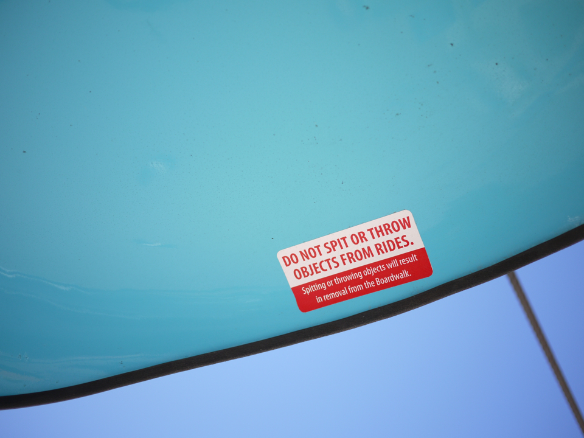
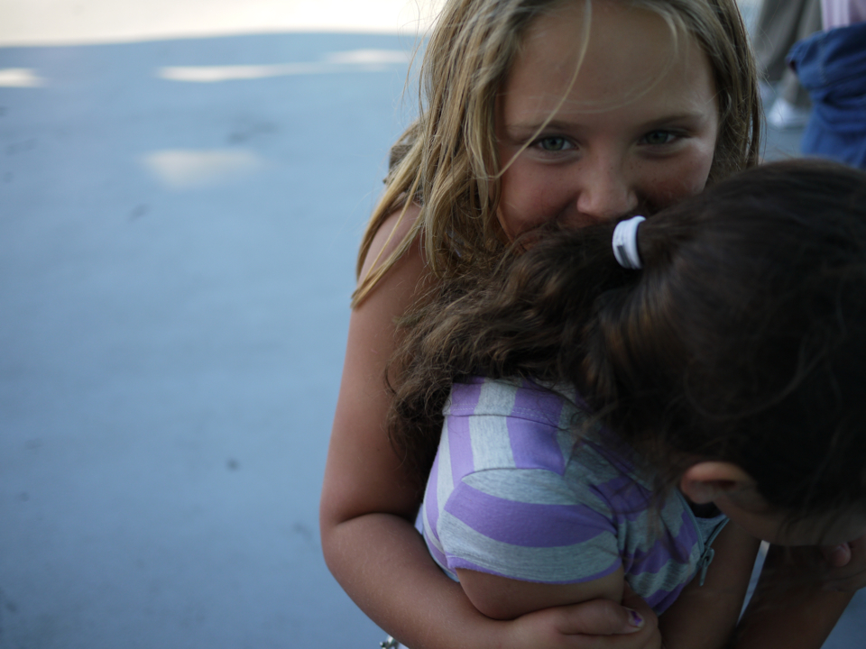

About
Fly is a jQuery plugin for making awesome carousels. It shows standard navigation on desktops, and is touch-based on mobile devices (open this page on your smartphone to try it out). It also resizes itself to fit each slide's height, so you can use it with photos or content of different aspect ratios.
Using Fly is pretty simple. Set up a <ul> like normal, then call $('#myUl').fly();. Each slide should be the same width, but their heights can vary; Fly adjusts its height for each slide.
Want to use it? You can snag the latest version of Fly from GitHub.
Options
Fly is brand new, and doesn't really have many options just yet. If there's an option or change you'd like to see, feel free to submit a new issue at the GitHub repository. Here are the current options, along with their defaults and such:
$('#someList').fly({
pictureSlider: true, //boolean, change this if you're using HTML content instead of just img tags
afterChange: null, //function(yourList) (called after each slide change)
});-
Pictures
- 

- 
$('#pictureDemo').fly(); -
HTML Content
- I am 300 pixels tall
- I am 200 pixels tall
- I am 220 pixels tall
- I am 320 pixels tall
- I am 250 pixels tall
$('#htmlDemo').fly({ pictureSlider: false });